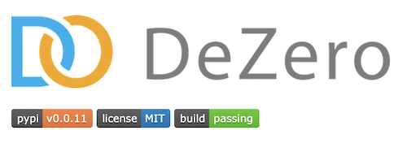

ステップ10 テストを行う¶
前ステップまでに実装したコード
[1]:
import numpy as np
class Variable:
def __init__(self, data):
if data is not None:
if not isinstance(data, np.ndarray):
raise TypeError('{} is not supported'.format(type(data)))
self.data = data
self.grad = None
self.creator = None
def set_creator(self, func):
self.creator = func
def backward(self):
if self.grad is None:
self.grad = np.ones_like(self.data)
funcs = [self.creator]
while funcs:
f = funcs.pop()
x, y = f.input, f.output
x.grad = f.backward(y.grad)
if x.creator is not None:
funcs.append(x.creator)
def as_array(x):
if np.isscalar(x):
return np.array(x)
return x
class Function:
def __call__(self, input):
x = input.data
y = self.forward(x)
output = Variable(as_array(y))
output.set_creator(self)
self.input = input
self.output = output
return output
def forward(self, x):
raise NotImplementedError()
def backward(self, gy):
raise NotImplementedError()
class Square(Function):
def forward(self, x):
y = x ** 2
return y
def backward(self, gy):
x = self.input.data
gx = 2 * x * gy
return gx
def square(x):
return Square()(x)
def numerical_diff(f, x, eps=1e-4):
x0 = Variable(x.data - eps)
x1 = Variable(x.data + eps)
y0 = f(x0)
y1 = f(x1)
return (y1.data - y0.data) / (2 * eps)
ソフトウェア開発において、テストは欠かせません。テストを行うことで間違い（バグ）に気づくことができ、またテストを自動化することでソフトウェアの品質を継続的に保つことができます。私たちの作るDeZeroにおいても、それは当てはまります。本ステップでは、テスト方法について――特に、ディープラーニングのフレームワークのテスト方法について――説明します。
NOTE
ソフトウェアのテストは、規模が大きくなるにつれ、独自の作法や細々とした決まりごとが多くなりがちです。しかしテストに関して、特に最初の時点では難しく考える必要はありません。まずは「テストする」ということが大切です。本ステップでは、“本格的”なテストではなく、できるかぎりシンプルなテストを行います。
10.1 Pythonのユニットテスト¶
Pythonでテストを行うには、標準ライブラリに含まれるunittestを使うと便利です。ここでは、前ステップで実装したsquare関数のテストを行ってみます。コードは次のとおりです。
[2]:
import unittest
class SquareTest(unittest.TestCase):
def test_forward(self):
x = Variable(np.array(2.0))
y = square(x)
expected = np.array(4.0)
self.assertEqual(y.data, expected)
上のとおり、まずはunittestをインポートし、unittest.TestCaseを継承するSquareTestクラスを実装します。肝心のテストは、名前がtestではじまる任意のメソッドを作成し、その中に書きます。ここで書くテストは、square関数の出力が期待した値と一致することを検証します。具体的には、入力が2.0のとき、その出力が4.0になることを検証します。
NOTE
上の例では、square関数の出力と「期待した値」が一致することを検証するために、self.assertEqualというメソッドを使っています。このメソッドは、与えられた2つのオブジェクトが「等しい」かどうかを判定します。このメソッドの他にも、self.assertGreaterやself.assertTrueなど、unittestには様々なメソッドが用意されています。他のメソッドについては、unittestのドキュメントなどを参照してください。
それでは、上のテストを実行してみましょう。ここでは、上のテストコードがsteps/step10.pyにある場合を想定します。その場合、ターミナルから次のコマンドを実行します。
$ python -m unittest steps/step10.py
また、Jupyter Notebook（もしくはGoogle Colab）の場合は、次のコマンドでテストを実行することができます。
[3]:
if __name__ == '__main__': unittest.main(argv=['first-arg-is-ignored'], exit=False)
.
----------------------------------------------------------------------
Ran 1 test in 0.005s
OK
それでは、テストの出力を確認してみましょう。この出力は、「1つのテストを行い、結果はOKだった」ということを意味します。つまり、テストは通過したということです。もしここで何かしらの問題があれば、「FAIL: test_forward (step10.SquareTest)」のような出力があり、テストが失敗したことが分かります。
10.2 square関数の逆伝播のテスト¶
続いて、square関数の逆伝播のためのテストを追加してみましょう。それには、先ほど実装したSquareTestクラスに次のコードを追記します。
[4]:
class SquareTest(unittest.TestCase):
def test_forward(self):
x = Variable(np.array(2.0))
y = square(x)
expected = np.array(4.0)
self.assertEqual(y.data, expected)
def test_backward(self):
x = Variable(np.array(3.0))
y = square(x)
y.backward()
expected = np.array(6.0)
self.assertEqual(x.grad, expected)
ここでは、test_backwardというメソッドを追加します。その中では、y.backward()によって微分を求め、その微分の値が「期待した値」と一致するかどうかを確認します。ちなみに、ここで「期待した値」（expected）として6.0という値を設定していますが、これは手計算によって求めた値です。
それでは、上のコードで再度テストを行ってみましょう。結果として、次のような出力が得られます。
[5]:
if __name__ == '__main__': unittest.main(argv=['first-arg-is-ignored'], exit=False)
..
----------------------------------------------------------------------
Ran 2 tests in 0.013s
OK
結果を見ると、2つのテストを通過したことが分かります。後は、これまでと同じ要領で、他のテストケース（入力と「期待した値」）も追加していくことが可能です。そして、テストケースの数が増えるに従い、square関数の信頼性も上がります。また、コードを修正したタイミングでテストを行うことで、square関数の状態を繰り返し検証できます。
10.3 勾配確認による自動テスト¶
先ほど私たちは逆伝播のテストを書きました。そこでは、微分の「期待した値」を手計算で求めて与えました。実は、それに取って代わる、自動的なテスト方法が存在します。それは勾配確認（gradient checking）と呼ばれる方法です。勾配確認は、数値微分で求めた結果とバックプロパゲーションで求めた結果を比較して行います。もしその差が大きければ、バックプロパゲーションの実装に問題があると考えられます。
NOTE
私たちは、「ステップ4」で数値微分の実装を行いました。数値微分は簡単に実装でき、おおよそ正しい微分の値を得ることができます。そのため、数値微分の結果と比較することで、逆伝播の実装の正しさをテストできます。
勾配確認は、入力値だけを用意すればよいので、効率良くテストできます。それでは、勾配確認によるテストを追加しましょう。ここでは、「ステップ4」で実装したnumerical_diff関数を用います。復習も兼ねて、その関数のコードも合わせて掲載します。
[6]:
def numerical_diff(f, x, eps=1e-4):
x0 = Variable(x.data - eps)
x1 = Variable(x.data + eps)
y0 = f(x0)
y1 = f(x1)
return (y1.data - y0.data) / (2 * eps)
class SquareTest(unittest.TestCase):
def test_forward(self):
x = Variable(np.array(2.0))
y = square(x)
expected = np.array(4.0)
self.assertEqual(y.data, expected)
def test_backward(self):
x = Variable(np.array(3.0))
y = square(x)
y.backward()
expected = np.array(6.0)
self.assertEqual(x.grad, expected)
def test_gradient_check(self):
x = Variable(np.random.rand(1)) # ランダムな入力値を生成
y = square(x)
y.backward()
num_grad = numerical_diff(square, x)
flg = np.allclose(x.grad, num_grad)
self.assertTrue(flg)
勾配確認を行うtest_gradient_checkメソッドの中では、ランダムな入力値を1つ生成します。次に、バックプロパゲーションによって微分を求め、さらに、numerical_diff関数を使って数値微分を求めます。そして、その2つの手法で求めた値がほぼ一致することを確認します。そのために、ここではnp.allcloseというNumPyの関数を利用します。
np.allclose(a, b)は、ndarrayインスタンスのaとbが近い値かどうかを判定します。どれくらいが「近い値」であるかの定義は、np.allclose関数(a, b, rtol=1e-05, atol=1e-08)のように、引数のrtolとatolによって指定できます。このとき、aとbのすべての要素が次の条件を満たすとTrueを返します（|.|の表記は、絶対値を表します。）。
|a - b| ≦ (atol + rtol * |b|)
なお、atolとrtolの値は勾配確認を行う対象の計算（関数）によって、小さな調整が必要な場合があります。その基準については、文献[6]などが参考になります。それでは、上の勾配確認を追加してからテストを行ってみましょう。今回は次のような結果が得られます。
[7]:
if __name__ == '__main__': unittest.main(argv=['first-arg-is-ignored'], exit=False)
...
----------------------------------------------------------------------
Ran 3 tests in 0.012s
OK
このように、微分を自動で求めるディープラーニングのフレームワークの場合は、勾配確認によって、半ば自動的にテストを行う仕組みが作れます。それによって、システマティックに（系統的に）、より広くテストケースを作ることができます。
10.4 テストについてのまとめ¶
DeZeroを開発するにあたって、テストについては以上の知識があれば十分でしょう。ここで学んだ手順で、DeZeroのテストコードを書くことができます。ただし本書では、これから先、テストに関する記述は省略して進めることにします。もしテストコードが必要だと感じたら、読者自身で追加してみましょう。
また、テスト用のファイル群は1箇所にまとめて管理するのが一般的です。本書でもテストコードは、testsディレクトリの中にまとめて置いてあります（また、テストを行うための便利関数も追加で実装しています）。興味のある方は、そのテストコードを眺めてみてください。そこでは、本ステップで書いたようなコードが多く見られます。なお、そのテスト用のファイル群は、次のコマンドでまとめて実行できます。
$ python -m unittest discover tests
上記のようにdiscoverというサブコマンドを使うことで、discoverの後に指定したディレクトリを対象にテストファイルを探索します。そして、見つかったすべてのファイルがまとめて実行されます。デフォルトでは、指定したディレクトリ内のtest*.pyというパターンをテスト用のファイルとして認識します（これは変更可能です）。これで、testsディレクトリに含まれるすべてのテストを一度に行うことができます。
NOTE
DeZeroのtestsディレクトリの中では、Chainerを正解と見立てたテストも行っています。たとえば、シグモイド関数をテストする場合、同じ入力に対してDeZeroとChainerでそれぞれ計算し、その2つの出力がほとんど同じ値であるかどうかを比較しています。
また、DeZeroのGitHubリポジトリは、Travis CIというサービスと連携しています。Travis CIは、継続的インテグレーションのためのサービスです。DeZeroのGitHubリポジトリでは、コードをpushしたり、Pull Requestをマージしたりしたタイミングで、自動でテストが実行されるようになっています。そして、その結果に問題があればメールなどで報告されます。それに加えて、DeZeroのGitHubリポジトリのトップページには、図10-1のような画面も表示されています。

図10-1 DeZeroのGitHubリポジトリのトップ画面
図10-1のように、「build: passing」というバッジが表示されます。これはテストを通過したことを示す証です（もしテストに失敗すれば「build: failed」というバッジが表示されます）。このようにCIツールと連携することで、ソースコードを常にテストできます。それによって、コードの信頼性を保つことができます。
DeZeroは小さなソフトウェアですが、これから先、より大きなソフトウェアへと成長させていきます。ここで説明したようなテストの仕組みを導入することで、そのコードの信頼性を維持させることが期待できます。以上で第1ステージは終了です。
ここまで私たちは、少しずつ――そして着実に――DeZeroを作り上げてきました。最初のDeZeroには「小さな箱（変数）」しかありませんでしたが、今ではバックプロパゲーションという複雑なアルゴリズムが実行できるまでに成長しました。ただし現時点では、バックプロパゲーションの適用は簡単な計算だけに限定されます。次のステージからは、より複雑な計算にも適用できるように、DeZeroをさらに拡張していきます。